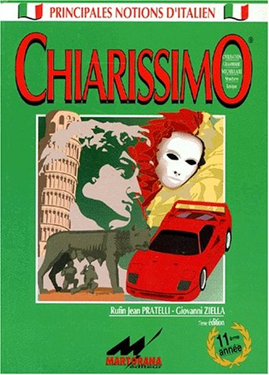
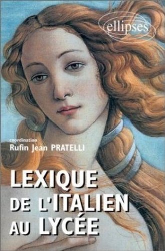

auteur – professeur retraité
Rufin Jean Pratelli
jean.pratelli@laposte.net
Présentation courte
Livres

Lexique de l'italien au lycée
Comparer deux langues équivaut à confronter deux peuples, deux cultures, deux façons de vivre et de penser. Aussi, cet ouvrage propose une comparaison entre l'italien et le français (notamment grâce à un très grand nombre de locutions, d'expressions et même de phrases complètes) à partir des mots d'usage le plus courant, comme on peut en relever tous les jours dans la langue des médias. Les pôles de regroupement de ce vocabulaire sont : individu et société, politique, économie, environnement. Cet ouvrage sera d'une très grande utilité non seulement aux élèves de l'Enseignement Secondaire et aux candidats aux divers concours d'accès à l'Enseignement Supérieur ; mais aussi à toutes les personnes (touristes ou hommes d'affaires) qui désireront remettre à jour et enrichir leur connaissance de la langue italienne actuelle.
Parcours
- Né à Lyon (2ème arrondissement) le 9 novembre 1924
- Élève du lycée Lamartine à Mâcon de 1930 à 1939
- Élève du lycée Ampère à Lyon de 1939 à 1943
- Baccalauréat « Sciences Expérimentales » en 1943
- Étudiant à la Faculté des Sciences à Lyon de 1943 à 1944
- Étudiant à la Faculté des Lettres à Lyon de 1944 à 1949
(avec une interruption de plus de 2 ans pour soins dans des hôpitaux hélio-marins à Hyères) - Étudiant à la Faculté des Lettres d’Aix-en-Provence de 1949 à 1955
- C.A.P.E.S. d’italien en 1953
- D.E.S. d’italien (à Aix-en-Provence) en 1954
- Agrégé d’italien en 1955
- Professeur d’italien dans divers lycées de Provence de 1950 à 1965
- Maître Assistant, puis Maître de Conférences, puis Professeur à l’Université de Provence de 1965 à 1989
- À l’Université de Provence, soutenance d’une thèse de Doctorat d’État, en 1977, sur « Le parler populaire de Signa et le lexique des parlers populaires de la région florentine-occidentale ».
Rufin Jean Pratelli est l’auteur du dictionnaire de ce parler populaire des environs de Florence, publié en Italie en 2004 par les Éditions Masso delle Fate, via Cavalcanti 9/D - 50058 SIGNA (FI).
Un exemplaire de ce dictionnaire, intitulé « A Signa si parlava così (e così si parla) : Vocabolario e modi di dire d’un vernacolo toscano del Novecento » est à Florence, dans la Bibliothèque de la prestigieuse Accademia della Crusca, section Dizionari (DIZ.392.PRAT).
Auteur de
99 livres